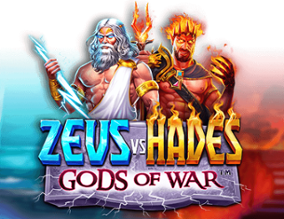
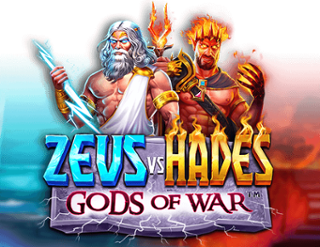
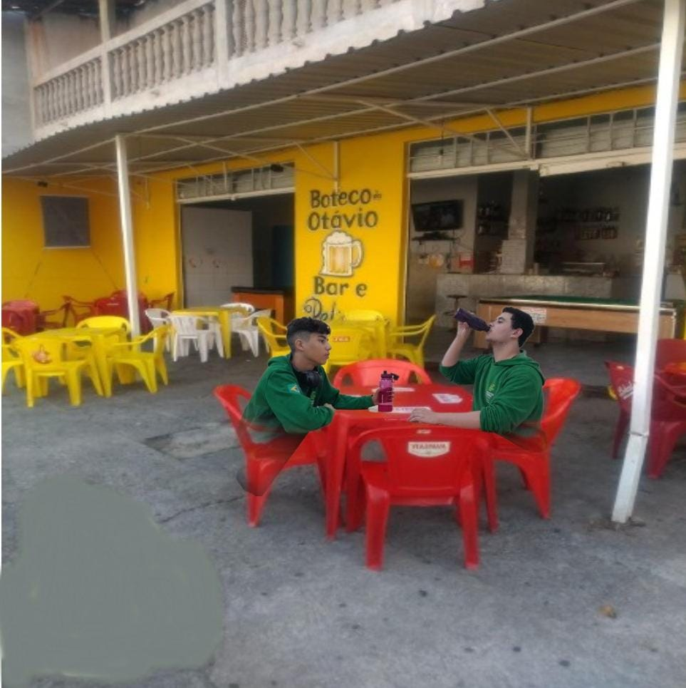
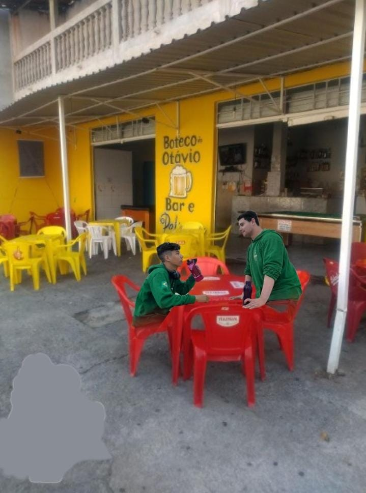
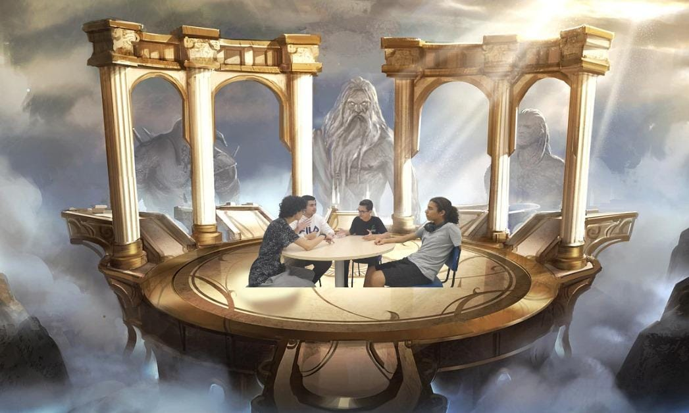
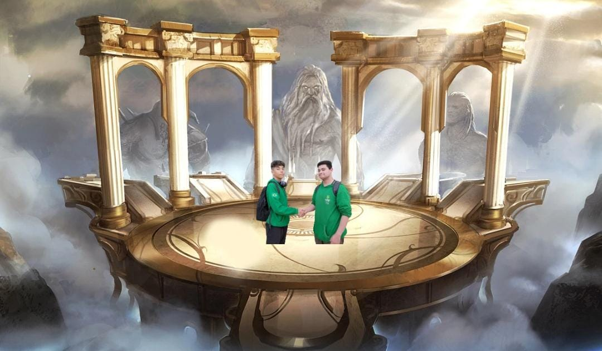

História
Hades e Zeus estavam, bebendo, quando Zeus, por
acidente, revelou ter trapaceado em uma competição que determinaria o governante do Olimpo. Essa
revelação deixou Hades profundamente incomodado, pois ele havia sido vítima dessa trapaça. Como
resposta, Hades decidiu convocar uma reunião de todo o conselho dos deuses para deliberar sobre a
resolução deste impasse.
 Após deliberação, os deuses chegaram a um consenso: a disputa pelo domínio do Olimpo seria resolvida por
meio de uma competição de queda de braço. Zeus acabou perdendo essa competição, mas se recusou a
renunciar ao seu posto, resultando em um conflito entre os dois deuses.Após a intensa
batalha entre Hades e Zeus, os outros deuses intervieram para evitar uma guerra completa
entre eles. Em vez disso, propuseram um acordo sensato para resolver a disputa de forma pacífica.

Ficou acordado que Hades assumiria o controle do Olimpo por um período determinado, enquanto Zeus se
retiraria para refletir sobre suas ações e se redimir de sua trapaça. Durante esse período, Zeus se
comprometeu a realizar atos de benevolência e ação nobre para compensar a injustiça cometida. Ao mesmo
tempo, Hades governaria o Olimpo com sabedoria e justiça.
Com o tempo, essa experiência transformou tanto Hades quanto Zeus, permitindo que eles encontrassem um
terreno comum e uma nova apreciação um pelo outro. Ao fim do prazo acordado, eles optaram por
compartilhar o governo do Olimpo, garantindo que juntos pudessem tomar decisões mais sábias e justas
para o benefício de todos os deuses e seres do Olimpo. Dessa forma, a paz foi restaurada e a harmonia
reinou novamente sobre o Monte Olimpo
.
Após deliberação, os deuses chegaram a um consenso: a disputa pelo domínio do Olimpo seria resolvida por
meio de uma competição de queda de braço. Zeus acabou perdendo essa competição, mas se recusou a
renunciar ao seu posto, resultando em um conflito entre os dois deuses.Após a intensa
batalha entre Hades e Zeus, os outros deuses intervieram para evitar uma guerra completa
entre eles. Em vez disso, propuseram um acordo sensato para resolver a disputa de forma pacífica.

Ficou acordado que Hades assumiria o controle do Olimpo por um período determinado, enquanto Zeus se
retiraria para refletir sobre suas ações e se redimir de sua trapaça. Durante esse período, Zeus se
comprometeu a realizar atos de benevolência e ação nobre para compensar a injustiça cometida. Ao mesmo
tempo, Hades governaria o Olimpo com sabedoria e justiça.
Com o tempo, essa experiência transformou tanto Hades quanto Zeus, permitindo que eles encontrassem um
terreno comum e uma nova apreciação um pelo outro. Ao fim do prazo acordado, eles optaram por
compartilhar o governo do Olimpo, garantindo que juntos pudessem tomar decisões mais sábias e justas
para o benefício de todos os deuses e seres do Olimpo. Dessa forma, a paz foi restaurada e a harmonia
reinou novamente sobre o Monte Olimpo
.
Galeria de fotos

1 . Apresentação dos personagens - Hades

2. Apresentação dos personagens - Zeus
{kind=link}
3. Hades e zeus bebendo
{kind=link}
4. Hades brigando
{kind=link}
5. Reunião para discutir o futuro do olimpo

6. Hades e Zeus se preparando para disputa

7. Queda de braço entre os deuses

8. Zeus não aceita o resultado e ataca hades

9. Hades revida o ataque
{kind=link}
10. os dois fazem um acordo